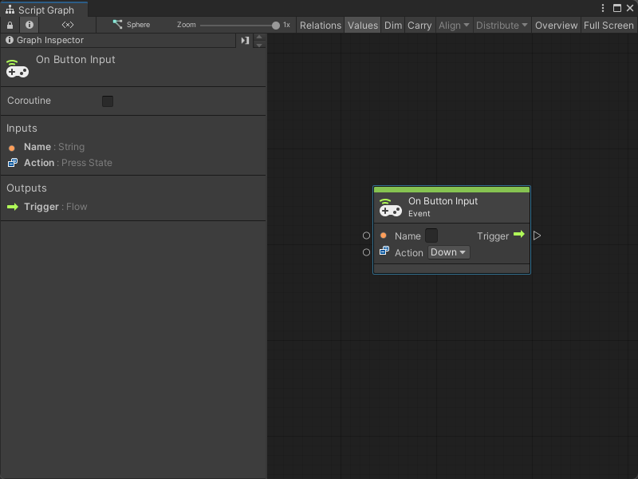
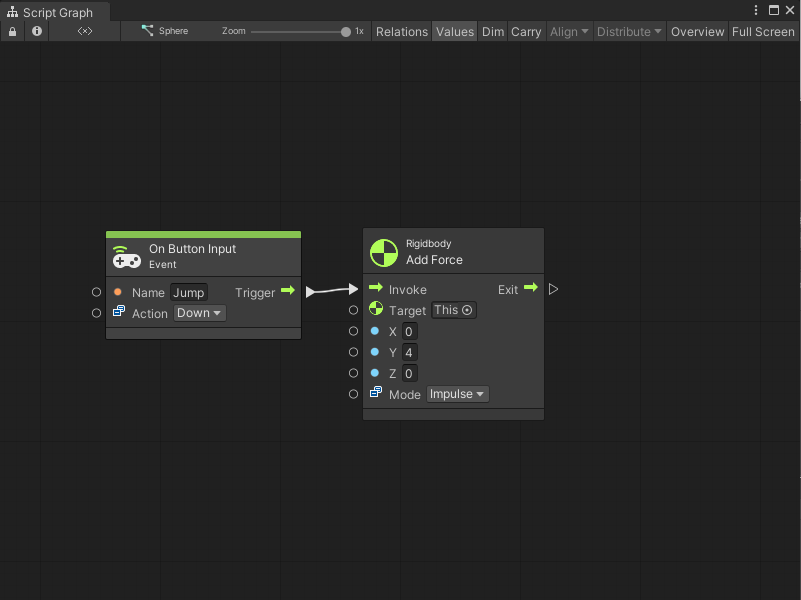
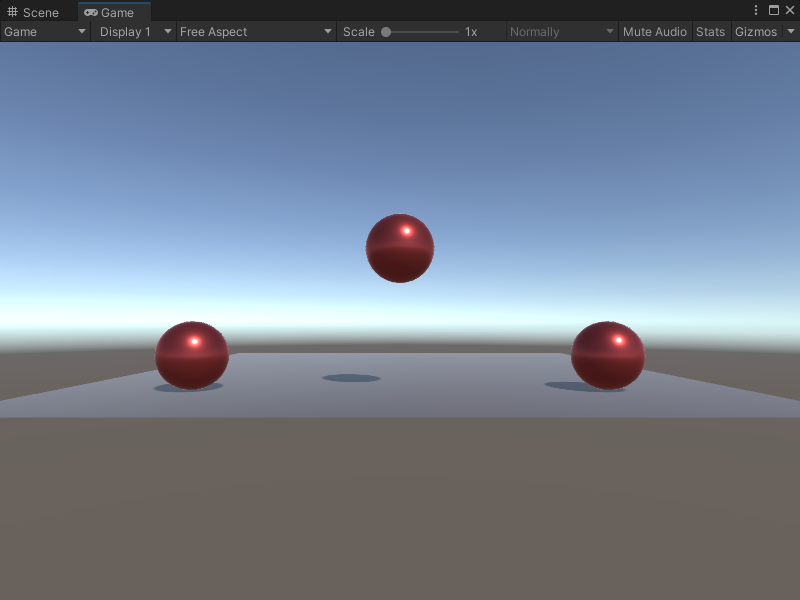

On Button Input node¶
[!NOTE] The On Button Input [!includenodes-note-manual]
The On Button Input node listens for a specified action on a virtual button from your Input Manager configuration. [!includenodes-desc-end]

Fuzzy finder category¶
The On Button Input node is in the Events > Input category in the fuzzy finder.
Inputs¶
The On Button Input [!includenodes-inputs]
| Name | Type | Description | |
|---|---|---|---|
| Name | String | The name of the button the node listens to for an Input event, as it appears in the Input Manager. | |
| Action | Press State | The specific press state of the button that the node listens for. | |
| Hold | The user holds down the button. | ||
| Down | The user presses the button. | ||
| Up | The user releases the button. | ||
Additional node settings¶
The On Button Input [!includenodes-additional-settings]
| Name | Type | Description |
|---|
Outputs¶
The On Button Input [!includenodes-single-output]
| Name | Type | Description |
|---|
Example graph usage¶
In the following example, the On Button Input node listens for the user to press the button or key assigned to the Jump axes in the Input Manager. When the user presses the button, the On Button Input node triggers the Rigidbody Add Force node, which adds an Impulse Force to the Rigidbody’s Y axis:

The Add Force node makes the Target Rigidbody lift into the air.

Related nodes¶
[!includenodes-related] to the On Button Input node: